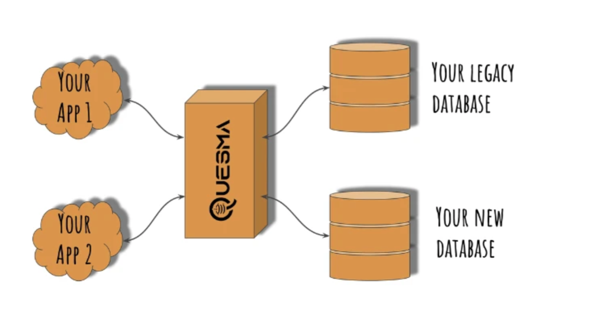
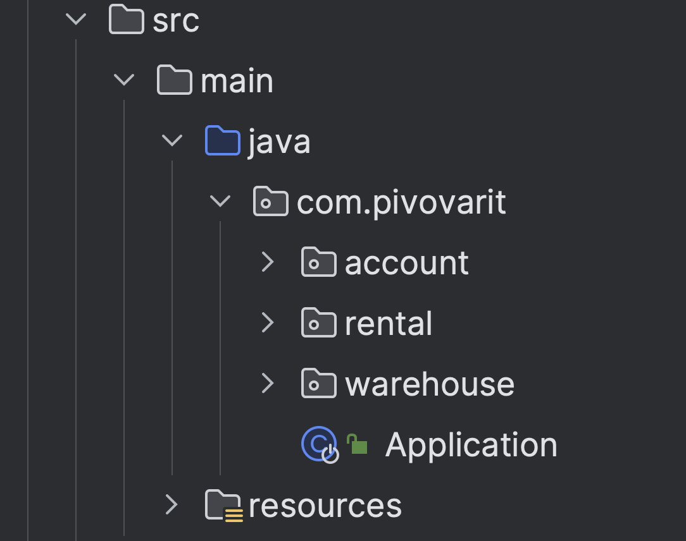
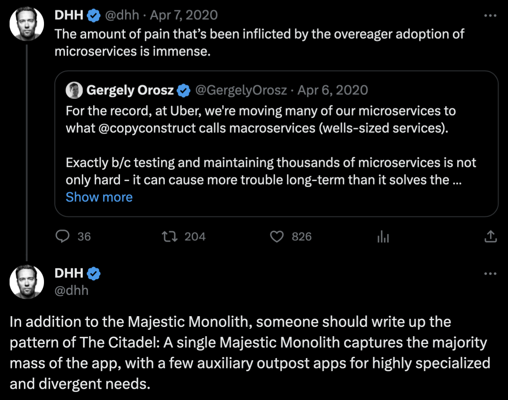
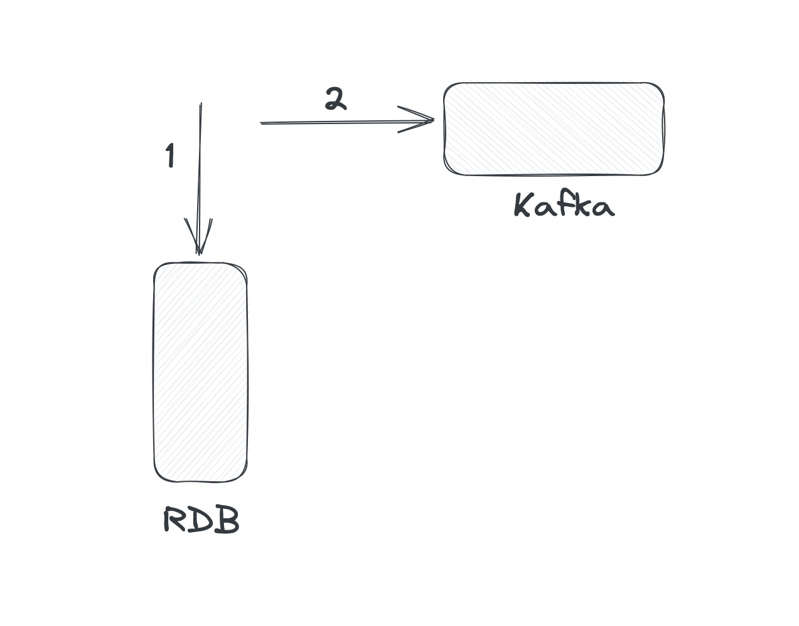
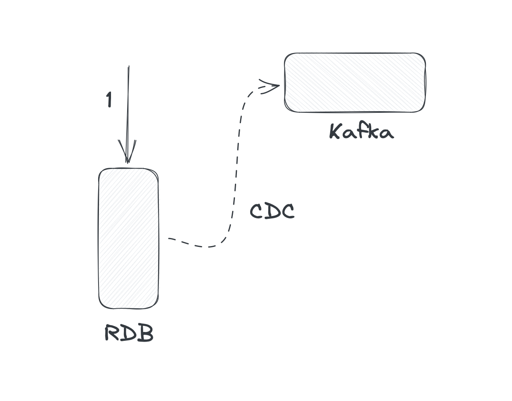

Embracing Microservices
Grzegorz Piwowarek
@pivovarit
{ 4comprehension.com }
Founding Engineer @ Quesma
Owner @ 4Comprehension
WarsawJUG Leader
@pivovarit
Questions?
sli.do #geecon

"It was the invention of the null reference in 1965...I call it my billion-dollar mistake."Tony Hoare
Another "billion-dollar mistake":
Microservices
Another "billion-dollar mistake":
"Micro"
Antipattern #1: Size Obsession
Microservice vs service?
How small is "micro"?
N lines of code?
N classes?
N MBs?
Rewritable in X time?
Microservices: the Main Idea
Enable scalability through independence and modularity
Tight coupling - Low cohesion

source: https://enterprisecraftsmanship.com/posts/cohesion-coupling-difference/
Low coupling - High cohesion

source: https://enterprisecraftsmanship.com/posts/cohesion-coupling-difference/
Don't vendor-lock yourself, but if you do... call us.
quesma.com
You can have modularity without microservices
Naturally, you don't get all the benefits, but it's not a demanding investment
"The smaller the service, the more you maximize the benefits and downsides of microservice architecture."Sam Newman
author: Bruce Wong
Netflix: 2000 engineers
However, don't be fooled by the size of those microservices, because a lot of those so-called microservices at Netflix are a lot larger, just looking at the code base, than the big monoliths that I've worked at, at many other companies.Paul Bakker, source: https://www.infoq.com/presentations/netflix-java/
Do not ask about the max size, but when to split
So... when do we split?
When it hurts too much
The #1 rule of distributed systems: don't do it until you have to
The Pragmatic Default
 https://twitter.com/dhh/status/1247522358908215296Our server app is a monolith, one big codebase of several million lines and a few thousand Django endpoints [1], all loaded up and served together. A few services have been split out of the monolith, but we don’t have any plans to aggressively break it up.https://instagram-engineering.com/static-analysis-at-scale-an-instagram-story-8f498ab71a0c
Antipattern #2: Old Habits Die Hard
Single version for all services
All-or-nothing deployments
Dedicated "DevOps" bottleneck teams
End-to-end Acceptance tests
"Can you make a change to a service and deploy it by itself without changing anything else? If the answer is no, then many of the advantages we discuss throughout this book will be hard for you to achieve."Sam Newman
Monorepos
make it easy to stick to old habits
- require extra discipline
- require extra tooling
Antipattern #3
Not Embracing Eventual Consistency
So you have 150 services and they all need to be up and responsive at the same time for the whole system to work?
Sync vs Async
Both are good choice if you understand trade-offs
Consistency vs Availability
Want to be fully independent? Forget about Strict Consistency
Antipattern #4:
Accidental Consistency
Eventual Consistency != Accidental Consistency
@Transactional
public void createUser(CreateUserCommand command) {
var user = from(command);
persist(user); // 1
send(UserCreatedEvent.from(user)); // 2
}
@Transactional won't save you in the distributed world
Dual-Write (distributed transaction)
Singe-Write with async propagation
Transactional Outbox Pattern
Change Data Capture
Antipattern #5:
Technology Heterogeneity
Sounds great on paper
Don't throw in new tech unless there's a good reason for it
Most companies will benefit more from standardized tech stacks with occasional experiments
Antipattern #6:
DRY abuse and Shared Libraries
Sound like a noble effort
Can contribute to dependency hell
A small change can result in N deployments
Need to be treated like libraries and not bags with code
Dangerous when business logic sneaks in
REST API Contract as Java Classes
Classes are not contract DSLs, need to be interpreted, results can vary
DTOs-per-consumer is bulletproof, but requires a bit of boilerplate
records reduce that boilerplate to minimum
Summary
Do not start with microservices, split existing services when absolutely necessary
You're now working with N independent systems, stop treating them like they are one
You're now prone to Fallacies of Distributed Computing - embrace Eventual Consistency
Pay attention to guarantees of your system - At-Most-Once and Accidental Consistency might not be good enough
Add new tech only when there's a good reason to do it
Thank You!
@pivovarit
4comprehension.comhttps://pivovarit.github.io/talks/embracing-microservices